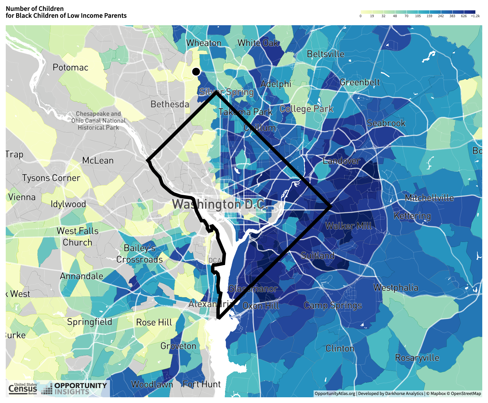

Is Washington DC a divided neighborhood?
Student Cheering Prof.Vanky
Number of Children
for White Children in High Income Family |
Number of Children
for Black Children in High Income Family |
|
|
Number of Children
for White Children in Low Income Family |
Number of Children
for Black Children in Low Income Family |
|
 |
Source:https://www.opportunityatlas.org
Washington, DC, the U.S. capital, borders the states of Maryland and Virginia. "DMV"--a loosely defined metropolitan area, is one of the most educated and most affluent metropolitan areas in the US (Washingtonpost, 2006). Among all four, Montgomery County and Prince George County are in Maryland, and Arlington County and Fairfax County are in Virginia. Many people who work in DC choose to live in one of these four counties. Some families intentionally choose to live in certain counties versus the others, but some don't have any choice but stay. Below is a Treemap that measures the percentage of children in these areas. It is obvious that Fairfax has the majority number of children, possibly for its size. One can see similiar results for Montgomery County and Prince George County. The percentage is calculated by dividing the number of children living in that county by the summed total of 5 areas.
Total Number of Children in High and Low Income Household
Fairfax, Prince George, and Montgomery counties holds more than 90% of children in this region. However, when the total number starts to be broken down, in this case, into income levels, the percentage of children of each county changed. Many children who are from Low Income Households live in Washington D.C. D.C.--a much smaller region comparing to Fairfax, Prince George, or Montogomery, is the home for 24% of kids from low income families, exceeding that of Fairfax. Furthermore, a more detailed visualization displayed a more detailed demographic make-up of each county. On the one hand, it shows that more children in white comes from High Income Households comparing to all other races. On the other, in low income households, there are more black and native american children.
| Total Number of Children in High Income Household |
Total Number of Children in Low Income Household |
|
|
click the legend to see individual result for each county
| Demographics of the Five Counties, High Income Households |
Demographics of the Five Counties, Low Income Households |
|
|
click the legend to see individual result for each race
| High School Graduation Rate in High Income Household |
High School Graduation Rate in Low Income Household |
|
|

|
List of FY 2019-20 Education Budget |
DC Public School STAR Rating |
In conclusion, Washington D.C is a very divided neighborhood. The division is shown through demographic characteristic, and the distribution of resources. Comparing to the north D.C., the west-side has better schools. However, the majority of children living in that area are white and from high income households. Minority race children or children who are born in low income households are missing the opportunities of accessing those schools. Even if there was a rare chance for them to go to better schools, they have to spent more time in traffic. From the interactive barplot, it is easy to see some groups have much lower High School completion rate. In the future, I would like to study more on the weekly working hours and income outcomes among diffrent racial groups. I am interested in looking at how these outcomes are correlated with the socialeconomic characters of one's childhool living environment.
The OpportunityAtalas is a great data platform to study inequality among neighborhoods and different residential groups.The plots created in on this website were created using data from the OpportunityAtalas. It did not take long to understand how it functions--such as how to downloading data and recreating visualizations from it. One thing that is worth noticing is its subcategories of race. The census data, in recent years, have improved its categorization system, thus become more inclusive and more accurate, as well as less confusing for the users. I recommend opportunityatalas to do the same.
|
- Washginton DC--753.4 Million
- Montgomery County--2.66 Billion
- Prince George's County--2.18 Billion
- Arlington County--669.6 Million
- Fairfax County--3 Billion
From this mapwe can see that Wards 7 and 8 are located in the SouthEast of DC, the only Wards that don't have schools rated 4 or 5 STAR*. In fact, many struggling schools are located in the East side of DC, where most children in black are.
|
|
* According to OSSE, STAR Framework ratings are designed to help celebrate successes, focus discussions, identify areas for support, and inform strategic planning. Below is a distribution of the School level STAR ratings for all schools within the LEA.
Other Source:"DC Public School STAR Rating", https://dcps.dc.gov/sites/default/files/dc/sites/dcps/page_content/attachments/FY20%20Budget_Public%20Deck.pdf
Montgomery School Budget
DC School Budget
Prince George School Budget
Arlington School Budget
Fairfax School Budget
WashingtonPost
Created by Yuning Feng, November 4th 2019
{kind=link}